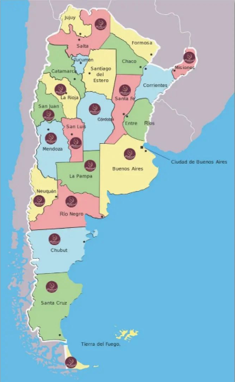

NATUREL GOURMET
Una Elección Natural
Productos Artesanales

1¿Quíenes somos?
Naturel Gourmet es una empresa familiar que inicia sus actividades el 01 de Marzo del 2010, dedicada a la elaboración de MERMELADAS ENDULZADAS CON JUGO DE UVA CONCENTRADO y dirigida por Ingenieros en Alimentos. Ubicada en el departamento Chimbas, provincia de San Juan Argentina, elabora recetas únicas, mediante la selecciona de frutas típicas de la región, de la más alta calidad organoléptica, madurez óptima, tamaño y color homogéneo.
Naturel Gourmet is a family company which started on 1st March 2010, dedicated to making Jams and Marmalades sweetened from concentrated grape juice and directed by Engineers in food processing. The factor is situated in the Chimbas district in the province of San Juan. Using recipes only through the selection of fruit in season typical of the region, with the highest organoleptic maturity, with optimum size and homogenous colouring.
2Nuestro compromiso
Sabemos lo importante que es conservar una salud óptima a través una alimentación sana y natural, es por eso que nuestros productos son elaborados con materia prima de excelente calidad, obteniendo productos de sabores únicos, especiales para satisfacer a los paladares más exigentes, que eligen con dedicación cada producto que llevan a su mesa, permitiéndoles experimentar una sensación única de bienestar personal. Gerente: Ana Isabel Vera Ing. en Alimentos, egresada de la Universidad Nacional de San Juan (UNSJ), MP Nº135 Mg. en Gestión de la Calidad Agroalimentaria, Universidad del Salvador Buenos Aires.
It is understood that it is important to maintain the best in food so that it is both natural and healthy and because of this it is of utmost importance to use raw materials of the highest quality which satisfies the most exacting of tastes so that each product when taken to the table, allows a sensation of personal well-being. Manager: Ana Isabel VeraEngineer in Food Engineering from the National University of San Juan. MP No 135 Masters in Food Quality Management - University of Salvador Buenos Aires.
Nuestros Productos
NUESTRAS MERMELADAS, son un producto con más fruta y menos azúcar (sacarosa), la que es remplazada en su totalidad, por JUGO DE UVA CONCENTRADO.
La proporción utilizada es de 70% de fruta y 30% de jugo concentrado, obteniendo productos con más sabor a fruta, no tan dulces, y reducido en calorías.
El uso de JUGO DE UVA CONCENTRADO, el subproducto dulce de la elaboración del vino, crea una extensión más saludable que permite que brille la bondad de la fruta.
Las características de nuestras Mermeladas son:
• Endulzadas con jugo de uva concentrado, 100% naturales, sin gelificantes, ni conservantes.
• Reducidas en Calorías (30 calorías por cucharada soperas).
• Aptas Diabéticas (Analizadas por LAPDI, Liga Argentina de Protección al Diabetico).
• Libres de Gluten, aptas celíacos y veganos.
• Aptas para ser consumidas como postres, o bien para acompañar tostadas, tartas, carnes, quesos, salsas.
Presentación del producto
Envase:
• Frasco de vidrio, con tapa metálica dorada con recubrimiento sanitario interior, de 400 gr.
• Sachets, de peso variable.
Sabores: DURAZNO, DAMASCO, CIRUELA, PERA, MANZANA, TOMATE, MEMBRILLO, NARANJA, MANDARINA, ZAPALLO.
Embalaje: Pack de 12 unidades.
Validez del producto: Cerrado 1 año, abierto 20 días refrigerado.
Our jams and marmalades are products with more fruit and less sugar (saccharose) which
Which is completely replaced by the concentrated grape juice.
This concentrated grape juice is a sweet bi product from the winemaking industry, it enhances and brings out the best in the fruit.
Botelling :
• 400 gm jars with a golden metal top with a sterilized interior covering
• Satchets in various weights
Flavours :
• PEACH, APRICOT, PLUM, PEAR, APPLE, TOMATO, QUINCE, ORANGE, MANDARIN AND PUMPKIN
Packaging: Packs of 12 units
Sell by date: Closed 1 year and open 20 days refrigated.


🔎Que es el Etiquetado Frontal?
Son alimentos mínimamente procesados por tal motivo siguen siendo sanos, ya que su contenido en azucares, grasas y sodio están muy por de bajo de los limites establecidos por la Ley.
Origen San Juan
Nuestras Mermeladas Naturel Gourmet, contarán en su etiqueta con el sello Origen San Juan. Este sello lo entrega el Ministerio de la Producción de San Juan a productos reconocidos por su calidad.
Puntos de Venta y Contacto
Solicítalas a nuestros DISTRIBUIDORES según tu ZONA:
BUENOS AIRES
• COOPERATIVA CECOPAF: Capital Federal. Tel: 344663079231818603
• BERNARDO GOLDSZTAJN: Tel: 1
• VERDEMENTE: ZONA SUR. Tel: 1158046125
BAHIA BLANCA
• MODO GREEN: Tel: 2915034703
ENTRE RIOS
• Luis Werner: Tel.3435018327
MAR DEL PLATA
• RAUL ZAMORA. Tel: 2235305466
• MONICA PALAZZO. Tel: 2236634733
CORDOBA
• EL ALMAZEN DISTRIBUIDORA NATURAL. Tel: 3547-451199
• FLORENCIA FRAIRE: 3516168375
• MARIANO RAMA: 3515514525
• RAFAEL PEREZ: Tel: 3512164120
LA PAMPA
• JORGE ETCHAR: Tel: 2954662172
MENDOZA
• DARIO MENDOZA. Tel: 2616659116
MISIONES
• CRISTIAN FELING. Tel: 3743432999
ROSARIO
• MARTIN ENRIA: Tel: 3416557188
SANTA FE
• ALEJANDRO FAUSTI . Tel: 3424443415
SAN LUIS
• HECTOR VICENTE: Tel: 2664363329
SAN JUAN
• ANA VERA. Tel: 2644445345
SAN NICOLAS - BUENOS AIRES
• APIDELTA: Rivadavia 706/ Urquiza 193/ Nación 550/ Chacabuco 8. Tel: 3364288526.
• 3M SUPERMERCADOS: Maipú 647.